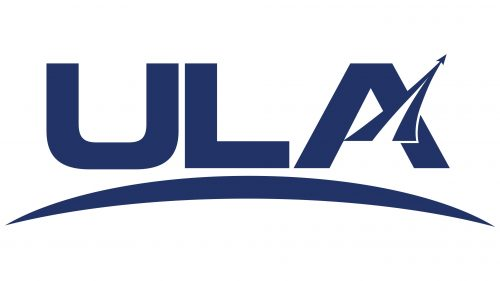

United Launch Alliance (ULA)
United Launch Alliance is a joint venture between The Boeing Company and Lockheed Martin Corporation, formed in 2006. ULA provides space launch services to the national security, civil government, and commercial sectors.
Overview
ULA operates the Atlas and Delta launch vehicle families. The company is known for its extensive launch experience and high mission success rate. ULA serves critical national defense missions and civil government projects.
Launch Vehicles
- Atlas V: Reliable workhorse for national security missions
- Delta IV: Heavy-lift vehicle for large payloads
- Vulcan: Next-generation launch system with improved capability and cost efficiency
Mission Portfolio
ULA specializes in national security missions, including Department of Defense and National Reconnaissance Office payloads. The company also supports civil government missions such as NASA's Mars rovers and space station resupply missions.
Future Direction
ULA is focused on transitioning to the Vulcan rocket, which will provide enhanced lift capability and reduced launch costs. The company is also exploring partnerships for commercial operations while maintaining its role in national security launches.